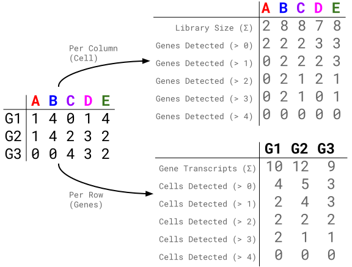
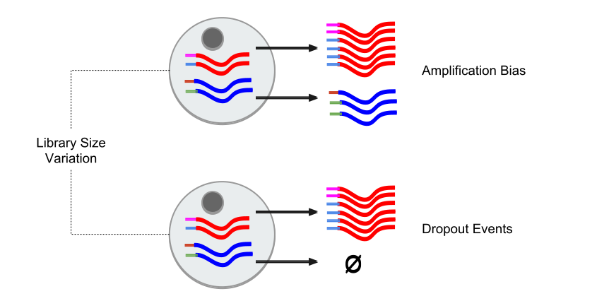

Una introducción al análisis de datos scRNA-seq
Contributors
 Mehmet Tekman
Mehmet Tekman
 Alejandra Escobar-Zepeda
Alejandra Escobar-Zepeda
 Irelka Colina
Irelka Colina
Questions
¿Cómo se comparan las muestras?
¿Cómo son capturadas las células?
¿Cuál es la diferencia entre los métodos Bulk RNA-seq y scRNA-seq?
¿Por qué es importante clusterizar datos?
Objectives
Entender las dificultades en la secuenciación y en la amplificación del scRNA-seq y cómo superarlas.
Conocer los tipos de variación en un análisis y cómo controlarlos.
Comprender qué es la reducción de dimensiones y cómo se puede realizar.
Familiarizarse con las principales técnicas de clusterización de datos y cuándo usarlas.
Single-cell RNA-seq
Una introducción al análisis de datos scRNA-seq
Speaker Notes
- Hola a todos y bienvenidos al taller de análisis single cell RNA-seq de Galaxy
-
Aquí les enseñaremos algunos de los conceptos básicos del análisis de datos single cell.
RNA-seq conjunto
.pull-left[ ]
]
.pull-right[ .reduce90[ .center[Resumen]
| | | |-:|:-| | Resolución| Tejido entero | | Señal | Expresión génica promedio por tejido | | Expresión diferencial | Diferencia entre la expresión génica promedio entre los tejidos | ] ]
Speaker Notes
- Vamos a comenzar con las diferencias entre Bulk RNA-seq y single cell RNA-seq data.
- Con el método Bulk RNA-seq observamos la expresión promedio de cada gen detectado en cada uno de los tejidos.
- Debido al número de moléculas de ARN que están siendo consideradas, la profundidad de la secuenciación y la fuerza del análisis son razonablemente altas.
- La expresión diferencial se mide entonces como la expresión relativa de un gen dado entre un tejido y otro.
Single Cell RNA-Seq
.pull-left[ ]
]
.pull-right[ .reduce90[ .center[Resumen]
| | | |-:|:-| | Resolución | Células individuales dentro de los tejido | | Señal | Expresión individual de un gen por cada célula | | Expresión Diferencial | Algunas células expresan de la misma manera el mismo grupo de genes; comparando un grupo de células contra otro | ] ]
Speaker Notes
- Con el análisis single cell, la etapa de medir la expresión promedio de un tejido se aleja.
- Y se dirige específicamente hacia la expresión génica de cada célula en esos tejidos.
- Aquí ya no comparamos tejido contra tejido, sino célula contra célula.
- Cada célula tiene un perfil genético asignado que describe la abundancia relativa de los genes que se le han detectado.
- Muchas células comparten el mismo perfil genético, donde idealmente un perfil genético describe un tipo de célula.
- A veces se necesita comparar conjuntos de datos de células individuales entre tejidos, y se observa que muchas células de los diferentes tejidos comparten el mismo tipo de células.
- Por ejemplo, observe los perfiles genéticos púrpura y verde que están presentes en ambos tejidos.
From Bulk RNA to Single Cell RNA
.image-50[ ]
]
.reduce90[
- Para cuantificar el ARN a nivel de las células individuales:
- Nuevos métodos de preparación de librerías
- Nuevos métodos de secuenciación
- Nuevos métodos de control de calidad
- Nuevos métodos de análisis ]
Speaker Notes
- Nuevas tecnologías implican nuevos métodos y técnicas para aprovechar las características nuevas que estas traen consigo.
- Los datos single-cell RNA-seq requieren diferentes medios de preparación de librerías, secuenciación, control de calidad y análisis
Captura Celular y Replicados
.center[¿Cómo preparamos las muestras para la secuenciación?]
Speaker Notes Por ejemplo, ¿Cómo se capturan y secuencian las células?
–
.pull-left[ .reduce90[
Bulk RNA-seq
- Corta finamente una parte el tejido
- Agrega la enzima para degradar la pared celular
- Enjuaga el ADN / ARN no deseado
- Realiza la secuenciación del material restante (Perform sequencing on leftover goop )
] ]
Speaker Notes En el análisis bulk RNA-seq, el proceso incluye tomar una muestra, remover las moléculas no deseadas y secuenciar todo lo demás.
–
.pull-left[ .reduce90[
Single-cell RNA-seq
- Corta finamente una parte el tejido
- Descomponer el tejido en células
- Aislar cada célula
- Agrega la enzima para degradar la pared celular
- Realizar el “barcoding”
- Realizar la secuenciación en un grupo común
] ]
Speaker Notes
- Para el análisis single cell, el proceso es muy similar, excepto que cada muestra es una célula.
- Y por lo tanto, debe ser secuenciado separadamente de las otras células.
- Una vez aisladas, se agregan códigos de barra únicos a cada célula y luego se secuencian.
–
Replicados Biológicos
.center[ .reduce90[
| | | |——–:|:———–| | Bulk RNA-seq | Cada corte del tejido es una muestra, puede tomar otro corte | | Single-cell RNA-seq | Cada célula es una muestra, no puede tener un replicado porque es única | ] ]
Speaker Notes
- El nivel de resolución en single-cell es al nivel de la célula y cada célula es única.
- Por lo tanto, el concepto de replicado biológico no es exactamente el mismo que en el bulk RNA-seq.
Captura / Clasificación:
¿Cómo se aíslan las células?
Speaker Notes La separación de las células puede llevarse a cabo de diferentes maneras.
–
.pull-right[.image-90[]]
.pull-left[ .reduce90[
- Pipeteo manual:
- Usa un tubo fino de vidrio para succionar las células
- Mantén la presión en el tubo
- Transporta el material a un nuevo entorno
- Libera la presión del tubo ] ]
Speaker Notes Un método es el pipeteo manual, donde el laboratorista succiona cada célula usando un tubo largo y fino.
–
.pull-left[ .reduce90[
- Repetir 1000 veces hasta aislar 1000 células
- Propenso a errores ] ]
Speaker Notes Pueden hacer esto cientos de veces para aislar cientos de células, pero es propenso a errores yy a menudo se aíslan varias células juntas.
–
.pull-left[ .reduce90[
- Pipeteo automático:
- Citometría de flujo ] ]
Speaker Notes Otro método es la citometría de flujo, en el que se reduce el error humano como componente de esta etapa.
Captura / Clasificación: Citometría de Flujo
.pull-right[]
.pull-left[ .reduce90[
- Las células fluyen en un líquido a lo largo de un tubo estrecho.
- La estrechez permite el paso de las células una por una.
- El fluido es suficiente para permitir el alto rendimiento. ] ]
.pull-left[ .reduce90[
- Cada célula es examinada con un láser para verificar sus propiedades:
- Tamaño y tipo de célula
- Dispersión frontal y Dispersión lateral
- Tipo de célula designada según la fluorescencia
- Marcadores de superficie celular (CDs)
- Designación gracias a la fluorescencia ] ]
- Tamaño y tipo de célula
.pull-left[ .reduce90[
- Separación de una célula en su propio entorno de secuenciación. ] ]
Speaker Notes
- La citometría de flujo hace flotar las células en un baño líquido poco profundo y las hace desplazarse a lo largo de un canal estrecho, lo justo solo para que pase una célula a través.
- Las células pueden ser examinadas según sus propiedades, tales como la dispersión de la luz y la designación gracias a la fluorescencia.
- De esta manera las células pueden ser marcadas y separadas.
Captura / Clasificación: Tamaño y Tipo
.pull-right[ ]
.pull-left[ Dispersión Óptica
- Ratio del tamaño de la célula: Longitud de onda
- Si el Tamaño de la célula < a la longitud de la onda (~400nm)
- Dispersión de baja intensidad y de alta inconsistencia
- Medido en términos:
- Dispersión frontal (FSC, por sus siglas en inglés: Forward Scatter)
- Dispersión lateral (SSC, por sus siglas en inglés: Side Scatter)
]
Speaker Notes
- Las propiedades de la dispersión óptica pueden ser usadas para confirmar el tamaño y la consistencia de la célula, donde las células más pequeñas que la longitud de la onda del láser producen bajas intensidades y patrones de dispersión más inconsistentes.
- Existen dos principales tipos de dispersión óptica: la frontal o delantera y la lateral.
Captura / Clasificación: Tamaño y Tipo
.pull-left[ .reduce90[
- Dispersión Frontal (FSC)*
- Mide a lo largo de la trayectoria del láser
- Intensidad FSC es proporcional al diámetro de la célula
- Buen indicador para distinguir entre las células inmunitarias. ] ]
.image-75[.pull-right[]]
Speaker Notes
- La dispersión frontal se alinea con el láser principal y mide el diámetro de las células, que es ideal para distinguirlas por su tamaño.
- Por ejemplo, como se ve en el eje X de la imagen, los monocitos, que son típicamente más grandes que los linfocitos.
–
.pull-left[
.reduce90[
Dispersion Lateral (SSC)
- Mide 90° con respecto al láser, a lo largo del trayecto de las células
- Mide intensidades mucho más débiles que FSC
- Refracción/reflexión es proporcional a la granulometría de la célula ] ]
.image-75[.pull-right[]]
Speaker Notes La dispersión lateral es perpendicular al láser principal y mide la granularidad de la célula, ideal para distinguir las que tienen estructuras internas menos definidas, por ejemplo como los granulocitos que se observan en el eje Y de la imagen.
Captura / Clasificación: FACS
.pull-left[ .footnote[.reduce70[Image from BD Biosciences]] ]
.pull-right[ .reduce90[ Fluorescence-Activated Cell Sorting (FACS)
- Marcadores de la superficie de la células
- Marcadores fluorescentes para cada célula
- Positivo y Negativo
- Si la célula es activada para ese CD o no
- Traza diferentes marcadores CD contra los otros *Aisla poblaciones celulares
- Puede establecer umbrales de activación para aislar el análisis en un subconjunto enriquecido de células
] ]
Speaker Notes
- Las células también pueden seleccionarse y caracterizarse por sus marcadores de superficie celular mediante FACS.
- Al representar gráficamente diferentes intensidades de marcadores de superficie entre sí, las células pueden separarse, seleccionarse y etiquetarse en función de estas propiedades fluorescentes.
Barcoding Cells
.center[ ]
]
.footnote[Agregar un código de barras único a cada transcrito en la célula]
Speaker Notes
- Una vez aisladas, las células pueden tener un código de barras.
- Los códigos de barras son secuencias únicas que se agregan a cada molécula de ARN.
- No son exclusivos de la molécula, sino exclusivos de la célula, de modo que dos moléculas de ARN serán marcadas con el mismo código de barras de la célula, en caso de que existan en la misma célula.
- Las moléculas de ARN de diferentes células tendrán diferentes códigos de barras.
Barcoding Cells
.footnote[Coloque las células en la placa de secuenciación]
.pull-left[ ]
]
.pull-right[ .reduce90[
-
De un conjunto de muchos muchos tejidos / células de muestras diferentes:
- Los códigos de barras de la célula nos dicen de qué célula proviene el transcrito
- Los UMI (Unique Molecular Identifier / Identificador Molecular Único) pueden decirnos cuánto se amplifió la transcripción, comparándola con otras transcripciones del mismo gen con la misma etiqueta UMI . ] ]
Speaker Notes Una vez que las moléculas de ARN han sido etiquetadas con los códigos de barras de las células, pueden ser amplificadas, ya sea por separado o agrupadas, donde los productos amplificados comparten los mismos códigos de barras de células que sus contrapartes originales.
Problemas de secuenciación: Amplificación
.center[.image-75[ ]]
]]
.reduce90[
- Polymerase Chain Reaction (PCR) / Reacción en cadena de la polimerasa
- Toma un solo fragmento y lo duplica
- Funciona bien cuando hay suficientes fragmentos en el grupo
- Baja cobertura
- Cuando los fragmentos en el grupo de secuenciación son bajos, muchos se perderán
- Puede conducir la amplificación en un solo sentido ]
Speaker Notes
- La PCR amplifica los productos génicos para hacerlos detectables más fácilmente durante la secuenciación.
- Cuando hay una gran cantidad de producto génico para amplificar, como es el caso del bulk RNA-seq, la PCR funciona bastante bien para amplificar todos los productos de una manera razonablemente bien representada.
- Sin embargo, en el caso de los productos single-cell, la cantidad a amplificar es muy pequeña y muchas lecturas únicas pueden perderse durante esta fase, mientras que otras pueden estar sobre-amplificadas, como se muestra en las transcripciones azul y roja del ejemplo.
Problemas de secuenciación: Amp. + UMIs
.pull-left[]
.pull-right[ .reduce90[
-
¿Cuántas transcritos rojos hay en la célula?
-
¿Después de la amplificación por PCR?
-
¿Qué hacen las pequeñas etiquetas de colores al comienzo de cada transcripción?
-
Identificadores moleculares únicos (UMI)
-
Agregado para ayudar a mitigar el sesgo de la amplificación. ] ]
Speaker Notes
- Para protegernos contra este tipo de sesgo de amplificación, podemos agregar un elemento aleatorio al código de barras.
- Estos códigos de barras aleatorios, conocidos como UMI, etiquetan únicamente las transcripciones de modo que es probable que dos transcripciones del mismo gen tengan diferentes códigos de barras aleatorios.
Problemas de secuenciación: Amp. + UMIs
.pull-left[]
.pull-right[
.center[Cuantificación de fragmentos
|   | Reads |
|---|---|
| Rojo | 6 |
| Azul | 3 |
] ]
Speaker Notes
- Consideremos el ejemplo de la izquierda: tenemos 2 transcritos rojos y 2 transcripciones azules dentro de la celda, que después de la amplificación equivalen a 6 transcripciones rojas y 3 transcripciones azules.
- Si tuviéramos que comparar la expresión diferencial de los genes contenidos en las transcripciones rojas y azules, con solo mirar los fragmentos amplificados, llegaríamos a la falsa conclusión de que las transcripciones rojas se expresan dos veces más que las azules.
–
.pull-left[
.center[Agrupación de fragmentos de acuerdo con los genes y UMI
|   | UMIs | Reads |
|---|---|---|
| Rojo | Rosa | 2 |
|   | Cyan | 4 |
| Azul | Rosa | 1 |
|   | Verde | 2 |
] ]
.pull-right[
.center[Cuantificación los fragmentos desduplicados (únicos)
|   | UMIs (Grouped) | # UMIs |
|---|---|---|
| Rojo | {Rosa, Cyan} | 2 |
| Azul | {Rosa, Verde} | 2 |
] ]
Speaker Notes Sin embargo, si agrupamos los fragmentos por sus UMIs, y luego contamos solo el número de los UMIs únicos por transcripción, eliminando la duplicación de los fragmentos que comparten la misma transcripción y UMIs, llegamos a 2 fragmentos rojas y 2 lecturas azules que representan mejor el verdadero número de transcritos.
Problemas de secuenciación: ¿UMIs únicos?
.pull-left[] .pull-right[
|   | UMIs | #Fragmentos |
|---|---|---|
| Rojo | {Rosa, Cyan} | 2 |
| Azul | {Rosa, Verde} | 2 |
.reduce90[
- El rosa aparece dos veces en genes diferentes.
- ¿En qué contexto son únicos los UMI? ]
]
Speaker Notes
- Los UMI son relativamente aleatorios, pero no lo son verdaderamente.
- Observe que el UMI rosa aparece dos veces: una en la transcripción azul y otra en la transcripción roja.
–
.reduce90[
-
¿Puede cada transcripción en una célula tener su propio UMI?
- ¿Número de transcripciones de ARNm en una célula?
- ~ 10⁵ to 10⁶ en una célula de mamífero.
- Requiere un mínimo de códigos de barras de longitud N, donde 4ᴺ = 10⁵ ]
Speaker Notes Esto se debe a que a menudo hay más transcripciones que UMI disponibles, que dependen de la cantidad de transcripciones en una célula y de la longitud del código de barras.
Problemas de secuenciación: ¿UMIs únicos?
.center[Códigos de barras de longitud N Con Distancia de Edición B:]
.pull-left[
.center[N = 5 y B = 1]
AAAAA AAAAC AAAAG AAAAT AAACA ····
CCCCC CCCCA CCCCG CCCCT CCCAC ····
·
·
·
.center[4⁵ = 1024 códigos de barras]
]
.pull-right[
.center[N = 5 y B = 2]
AAAAA AAACC AAAGG AAATT AACCA ····
CCCCC CCCAA CCCGG CCCTT CCCAA ····
·
·
·
.center[4⁵⁻¹ = 512 códigos de barras]
]
.footnote[
Las Distancias de Edición protegen contra ** errores de secuenciación**.
]
Speaker Notes
- Considere un conjunto de códigos de barras de longitud 5 con una distancia de edición de 1 entre códigos de barras adyacentes y otro conjunto con una distancia de edición de 2.
- El primero no es robusto contra los errores de secuenciación comunes de 1 par de bases, pero el segundo solo permite la mitad del número de códigos de barras.
- Esta compensación entre la cantidad de códigos de barras disponibles y la protección contra errores de secuenciación es fundamental en el diseño de códigos de barras de células y UMI.
Problemas de secuenciación: ¿UMIs únicos?
.pull-left[] .pull-right[
|   | UMIs | # Fragmentos |
|---|---|---|
| Rojo | {Rosa, Cyan} | 2 |
| Azul | {Rosa, Verde} | 2 |
.reduce90[
- El rosa aparece dos veces en diferentes genes
- ¿En qué contexto son los UMIs únicos?
]
]
.reduce90[ ¿En qué contexto son los UMIs únicos?
- UMIs son “sal aleatoria”
- ‘Suficientemente único’ a nivel de transcripción
- Deseamos contar solo las transcripciones
- Deduplicación de UMI a nivel de transcritos
- Buena estimación de la verdadera abundancia de las transcripciones ]
Speaker Notes En el contexto de la amplificación, las UMI no necesitan ser únicas, solo necesitan ser lo suficientemente aleatorias para deduplicar las transcripciones a fin de dar una estimación más precisa del número de transcripciones dentro de una celda.
Códigos de Barra de las Células y los UMIs (Recap)
Para cada célula:
- Agrega el código de barras a la célula ![Se agregan grupos de GGG y TCT a dos células diferentes para etiquetarlas.]](../../images/scrna-intro/scrna_pbb_barcodes_add.svg)
Speaker Notes Así que recapitulemos lo que hemos aprendido: primero, cada célula tiene un código de barras celular que a su vez es agregado a cada molécula de ARN en cada célula.
Códigos de Barra de las Células y los UMIs (Recap)
Para cada célula:
- Agrega el código de barras celular
- Agrega los UMIs a la células que ya tienen el código de barra celular

Speaker Notes
- Luego agregamos los UMI aleatorios a todas las transcripciones, que etiquetan aún más las moléculas.
- Luego se pueden utilizar para deduplicar las transcripciones después de la amplificación.
- Después de la amplificación, debemos realizar algunos controles de calidad.
Control de calidad (QC): Superando el ruido de fondo
.center[]
- El número de características por célula y el tamaño de la biblioteca deben seguir una curva normal
- El filtrado de Min-Max ayuda a cortar las colas gruesas de la distribución
Speaker Notes
- Una forma de hacerlo es establecer umbrales en los límites de detección de genes y células.
- Considera un análisis en el que están involucrados solo 3 genes (G1, G2 y G3) y 5 células (A, B, C, D y E).
- La primera fila de la tabla superior define el tamaño de la biblioteca, que es el número total de ARN mensajeros en todos los genes de cada célula.
- Las filas siguientes son los umbrales de detección de genes, que muestran cuántos genes se detectan en cada célula para genes superiores a las cantidades umbral de 0 a 4.
- Vemos que incluso un umbral de más de 3 transcritos detectados en una célula determinada todavía mantiene 3 células en el análisis: B, C y E. En la tabla inferior, se representa lo contrario, con el número total de transcritos en todas las células para cada gen.
- Al establecer umbrales de detección, podemos ver cuántas células describe el gen para ese umbral.
- En ambos casos, podemos ver que si establecemos los umbrales demasiado bajos, corremos el riesgo de mantener genes o células de baja calidad, pero si establecemos los umbrales de detectabilidad demasiado altos, corremos el riesgo de perder demasiados.
Normalización: Bulk vs Single-Cell
.pull-left[
Bulk RNA-seq: Alta Cobertura
|   | T1 | T2 | T3 |
|---|---|---|---|
| GenA | 100 | 80 | 40 |
| GenB | 45 | 30 | 40 |
.reduce70[* La expresión genética media es alta]
scRNA-seq: Muy baja profundidad de secuenciación
|   | C1 | C2 | C3 | C4 | C5 |
|---|---|---|---|---|---|
| GenA | 0 | 0 | 2 | 0 | 1 |
| GenB | 2 | 0 | 15 | 0 | 0 |
.reduce70[* La expresión genética media es cero]
]
.pull-right[
¿Por qué esto es un problema?
.center[ \(R(s,g) = \frac{X\_{sg}}{(\prod\_{s} X\_{s})^{\frac{1}{n}}}\)
\[DESeq(s,g) = \frac{X\_{sg}}{Med(R\_{s})}\]] ]
Speaker Notes
- Sin embargo, el filtrado puede ser un lujo, ya que muchos conjuntos de datos de single-cell RNA-seq tienen normalmente una profundidad de secuenciación baja en comparación con bulk RNA-seq.
- Durante el proceso de normalización, las muestras se escalan entre sí para hacerlas más comparables.
- Esto se realiza normalmente mediante el uso de valores medianos. Por ejemplo, para la normalización DE-Seq, se toma el recuento de la media geométrica de una célula y cada valor de gen en esa célula se divide por él y por el valor mediano de todas las medias geométricas de todas las células.
- Si la mediana de la expresión génica es alta, este método de normalización funciona bastante bien.
–
.pull-right[ ¡No se puede dividir entre cero! ]
Speaker Notes
- Pero si la mediana de la expresión génica es cero, como suele ocurrir con los datos de una sola célula, entonces tenemos el problema de dividir entre cero.
- Existen métodos para sortear estos recuentos de cero.
Normalización: método SCRAN
.footnote[.small[Pooling across cells to normalize single-cell RNA sequencing data with many zero counts, Lun et al., 2016]]
.pull-left[ ]
]
.pull-right[ .reduce90[
-
Calcula el tamaño de la biblioteca de todas las células.
-
Calcula el tamaño de la biblioteca de una célula de pseudo referencia (promedio)
-
Separa los tamaños impares (rojo) y los tamaños pares (azul) en dos grupos
-
Ordena cada grupo por tamaño de biblioteca y lo coloca en lados opuestos de un “anillo” ] ]
Speaker Notes
- Uno de estos métodos es SCRAN, que funciona creando grupos superpuestos de células, de modo que cualquier célula individual se describe por células de tamaños de biblioteca similares.
- El método implica dividir todas las células en un grupo par e impar por el tamaño de su biblioteca, y organizarlas en una estructura de anillo donde las células vecinas en el anillo tienen tamaños similares.
Normalización: método SCRAN
.footnote[.small[Pooling across cells to normalize single-cell RNA sequencing data with many zero counts, Lun et al., 2016]]
.pull-right[]
.pull-left[ .reduce90[
-
Define grupos superpuestos de células adyacentes de tamaño k
- Para cada grupo
- Suma los tamaños de biblioteca de todas las células dentro del grupo
- Obtiene un factor de tamaño dividiendo por la célula de referencia
- Para cada célula
- Encuentra los grupos a los que pertenece
- Construye un modelo lineal usando estos factores de tamaño
- Estima el factor de tamaño de la célula en dicho modelo lineal
] ]
Speaker Notes
- Se definen grupos superpuestos de tamaño fijo, lo que da como resultado que cada célula sea definida por múltiples grupos.
- Un modelo lineal para esa célula puede entonces ser construido por los grupos en los que se encuentra, y los factores de normalización para todas las células se pueden determinar de esta manera.
Normalización: método SCRAN
.footnote[.small[Pooling across cells to normalize single-cell RNA sequencing data with many zero counts, Lun et al., 2016]]
.center[ ]
]
Speaker Notes
- Con este método, el problema de baja cobertura se soluciona convirtiendo las células con tamaños de biblioteca bajos en componentes útiles de un factor de tamaño que se puede aplicar a células similares.
- Estos métodos de normalización novedosos eran algo común hace unos años, pero a medida que las tecnologías de secuenciación han mejorado, el problema de muchos recuentos de cero en la matriz se vuelve menos importante y los factores de tamaño de normalización se pueden derivar utilizando bulk RNA-seq una vez más.
Variación deseada vs no deseada
.pull-right[ ]
]
.pull-left[ .reduce90[ Variación deseada
-
Expresión de los genes con valores más altos de expresión diferencial
-
Variación no deseada *
- “Factores de confusión”
- Variación técnica
- Fuente de lote
- Tamaño de la biblioteca
- Variación biológica
- Ruido celular intrínseco
] ]
Speaker Notes
- Otros factores que debemos tener en cuenta durante un análisis de single-cell RNA-seq son los factores no deseados que pueden confundir el análisis.
- Lo ideal sería que los perfiles genéticos que separan los diferentes tipos de células estén impulsados por la varianza biológica.
- Sin embargo, existen variables de confusión tanto de fuentes técnicas como biológicas que no son útiles para el análisis pero contribuyen a la varianza.
Variables de confusión: Biológicas
.center[ ]
]
.pull-left[ .reduce90[ .center[Transcripción en ráfagas (“Transcription bursting”)]
- La transcripción no es continua, ocurre en “ráfagas”
- Fenómeno oculto en bulk RNA-seq ] ]
.pull-right[ .reduce90[ .center[Ciclo Celular]
- Células del mismo tipo tienen el doble de ARNm en la fase M que en la fase G1 ] ]
Speaker Notes
- La varianza de confusión biológica aparece en dos formas: transcripción en ráfagas y variación del ciclo celular.
- La transcripción en ráfagas es un fenómeno que ocurre en células en las que la transcripción ocurre en estados discretos de activo e inactivo, donde el intervalo entre estos estados es difícil de modelar.
- En bulk RNA-seq, este fenómeno es imperceptible ya que los efectos se promedian en muchas células. Pero en experimentos de single-cell, dos células del mismo tipo pueden exhibir diferentes perfiles genéticos simplemente porque una célula está transcribiendo activamente y la otra no.
- Esto no es algo que podamos controlar en el análisis, pero es algo que debemos tener en cuenta al comprender el ruido en el agrupamiento de células.
- La variación del ciclo celular, por otro lado, es un proceso mucho mejor entendido, donde la cantidad de ARN en una célula es aproximadamente el doble que la de una célula del mismo tipo debido a que una se encuentra en la fase G1 temprana y la otra en la fase M durante el ciclo celular.
- Hay genes que se sabe que covarían con el ciclo celular, por lo que al hacer una regresión del efecto de estos genes, podemos controlar el ciclo celular.
Variables de confusión: Técnicas
.center[]
.pull-left[ .reduce90[ Sesgo de Amplificación
- Diferentes transcritos se amplifican más que otros
- Mitigación vía UMIs ] ]
.pull-left[ .reduce90[ Eventos de marginación
- Algunos genes no se detectan falsamente en las células
- Mitigación vía mejores métodos de captura y normalización ] ]
Speaker Notes
- La varianza de confusión técnica aparece en tres formas: sesgo de amplificación, eventos de marginación y variación del tamaño de la biblioteca.
- El sesgo de amplificación puede mitigarse mediante UMI como se demostró anteriormente.
- Los eventos de marginación dan lugar a los ceros predominantes en las matrices de recuento, y su efecto se puede reducir utilizando técnicas de normalización inteligentes como el método de agrupación mostrado anteriormente, así como utilizando mejores métodos de secuenciación.
Variables de confusión: Técnicas
.center[]
Variación del tamaño de la biblioteca
- Las células tienen diferentes tasas de transcripción y captura
- Mitigación vía normalización
Speaker Notes
- La variación del tamaño de la biblioteca surge por una variedad de razones, pero es la fuente principal de variación dentro de un análisis.
- Al igual que en bulk RNA-seq, esto se reduce con buenos métodos de normalización.
Relaciones entre Células
Considera:
- 1,000s de Células
- 10,000s de Genes
- 10k dimensiones en el conjunto de datos, con 1k observaciones
Objetivo:
- Encontrar grupos de células en un subconjunto de estos genes
Nota:
- Algunas células pueden tener una expresión muy similar en un gen y una expresión muy diferente en todos los demás
- ¿Cómo representamos esto?
Speaker Notes
- Una vez que hemos eliminado los factores de confusión no deseados del análisis, tenemos el problema de cuantificar las relaciones entre las células.
- Desde el punto de vista del análisis de datos, tratamos a cada célula como una observación y a cada gen como una variable.
- Para genomas grandes, esto significa conjuntos de datos de dimensiones extremadamente altas. Las células existen como puntos en este espacio de alta dimensión muy escasamente poblado, lo que dificulta ver las agrupaciones naturales.
- El espacio de alta dimensión se puede reducir mucho simplemente filtrando los genes que no parecen expresarse diferencialmente en todas las células.
- Sin embargo, para encontrar las relaciones entre células, necesitamos definir las distancias entre ellas.
Matriz de Distancias

Speaker Notes
- Una matriz de distancias hace exactamente esto, definir la distancia entre dos células cualesquiera mediante un solo valor de puntuación.
- Aquí usamos la distancia euclidiana en un conjunto de datos tridimensional de 3 genes (G1, G2 y G3) y 3 células (R, P y V).
- La distancia entre dos células cualesquiera se puede calcular como la suma de los cuadrados de la diferencia en los valores de los genes.
- Observa cómo la matriz de distancias es simétrica a lo largo de la diagonal, lo que confirma que, por ejemplo, la distancia de las celdas R a V es la distancia de V a R como se espera.
Relación de las células: KNN

- Ejecutar K-nearest neighbours para conectar vértices representados por células.
Speaker Notes
- Una vez que se genera una matriz de distancia, podemos realizar K-nearest neighbours para generar bordes dirigidos entre células.
- Para cada fila de la matriz de distancia, se seleccionan K de las células con los valores de distancia más pequeños que representan el vecino más cercano que tiene la célula de la fila actual a las células de la columna seleccionada.
- Si los bordes se comparten mutuamente entre células vecinas, esto se denomina enfoque de vecino más cercano compartido.
Reducción dimensional

.pull-left[ .reduce90[ Objetivo:
- Tomar un conjunto de datos de alta dimensión y reducirlo a una dimensión más baja que podamos entender.
- ejemplo: 10000-D → 2D ] ]
.pull-right[ .reduce90[ Restricción:
- Conservar la topología de alta dimensión en un espacio de baja dimensión.
- ejemplo: si la celda A está lejos de la celda D pero cerca de la celda B en 3D, se deberían replicar esas relaciones en 2D.
] ]
Speaker Notes
- Podemos representar este espacio tridimensional fácilmente como 3 ejes independientes con puntos que representen las células.
- Y extrapolar este conjunto de ejemplos de dimensiones relativamente bajas a un conjunto de datos reales de miles de dimensiones que está más allá del alcance de la posibilidad humana.
- La reducción dimensional es un tipo de técnica que toma un conjunto de datos de alta dimensión y produce una representación de baja dimensión, generalmente bidimensional, que intenta preservar las distancias entre los puntos.
- Aquí las diferencias relativas entre células se mantienen tanto en las representaciones de alta y baja dimensión.
- Hay muchos tipos diferentes de técnicas de reducción de dimensiones, cada una con sus propias fortalezas y debilidades que dependen del tipo y la dimensionalidad de los datos.
Agrupamiento
.pull-left[.image-100[ ]]
]]
.pull-right[ .reduce90[
- Proyección en dos dimensiones
- Cada punto es una célula
- Agrupar puntos por color, donde las células de diferentes colores pertenecen a diferentes grupos
- Diferentes grupos representan diferentes tipos de células ] ]
Speaker Notes
- Una vez que el número de variables del conjunto de datos se ha reducido lo suficiente mediante el filtrado y la reducción dimensional, la agrupación se puede realizar más fácilmente.
- Aquí, en esta proyección de dos dimensiones, cada círculo es una célula y los colores únicos representan los grupos a los que han sido asignadas.
- Las distancias físicas entre los grupos de células coloreadas nos dicen qué tan bueno es el agrupamiento para esta proyección.
Agrupamiento
![![Mismo diagrama de dispersión mostrando el agrupamiento de células, pero ahora los grupos están etiquetados de acuerdo al tipo de célula como ‘Neurons’, ‘NSC’, ‘Glial Prog.’, ‘Astrocytes’, etc.]](../../images/scrna-intro/singlecellplot4.png){kind=link}
.pull-right[ .reduce90[
- Proyección en dos dimensiones
- Tipos discretos de células
- Cada grupo debe representar un diferente tipo de célula
- Buscar los genes expresados de manera más diferencial en cada grupo
- Encontrar los genes marcadores → Tipo de Célula ] ]
Speaker Notes
- Al inspeccionar los principales genes expresados diferencialmente en cada grupo frente a todos los demás grupos, se pueden encontrar pistas sobre el tipo de célula que describe el grupo.
- Los tipos de células a menudo se caracterizan por la expresión de genes marcadores específicos, y la presencia de estos genes son fuertes indicadores del tipo.
- El descubrimiento de genes marcadores se puede utilizar para anotar los grupos.
Agrupamiento
.pull-left[.image-100[]]
.pull-right[ .reduce90[
- Proyección en dos dimensiones
- Tipos discretos de células
- Relaciones inferidas por Linaje
- Células madre neuronales (Neural Stem Cells) diferenciadas en tipos de células maduras
- Los árboles de linaje se construyen teniendo en cuenta:
- La entropía del grupo
- La proximidad del grupo ] ]
Speaker Notes También podemos derivar aún más las relaciones entre estos grupos calculando árboles de linaje en función de la cantidad de ruido en cada grupo, con la expectativa de que las células madre tengan perfiles de expresión ruidosos que produzcan grupos más amplios, y las células maduras tengan perfiles de expresión muy claros que produzcan grupos más apretados.
Agrupamiento: Duro vs Suave
|   |   |
|---|---|
| .image-100![Mismo conjunto de datos mostrando grupos distintos con una separación muy clara]] | .image-100[ ] ] |
| .center[Duro] | .center[Suave] |
| Espacios grandes entre grupos | Los grupos sobrelapan |
| Los tipos de células están bien definidos y el agrupamiento lo refleja | Los tipos de células parecen entremezclarse |
Speaker Notes
- Los tipos de agrupación que es probable que encuentres en un análisis dependen de los conjuntos de datos de entrada, donde es menos probable que las células tomadas de muestras en etapa tardía se agrupen juntas y es más probable que produzcan grandes lagunas visibles conocidas como agrupamiento duro que claramente definen diferentes tipos.
- Es más probable que los conjuntos de datos de etapas tempranas produzcan grupos más suaves, donde los grupos vecinos comparten límites suaves a medida que éstos se entremezclan ligeramente entre sí.
Fenotipos Continuos:
.center[ ]
.reduce90[
]
.reduce90[
- Los tipos de células no son discretos, las células están en transición
- Cambio continuo en el tiempo de un tipo menos maduro a un tipo más maduro ]
Speaker Notes Es de esperar un agrupamiento suave, ya que aunque el agrupamiento es un método estadístico para dividir datos de manera discreta, la biología celular subyacente de los datos es un proceso continuo, donde las células pasan de un estado bien definido a otro a través de etapas intermedias que se representan en entre dos centros de grupos.
Agrupando
![![Perfiles de expresión discretos: Se muestran tres montañas con nubes de las que sólo vemos tres picos. En rojo, verde y azul se representan tipos de células en los picos. Paisaje de expresión continua: las nubes se eliminan y vemos que las montañas están realmente conectadas y hay células intermedias en varios colores de transición.]](../../images/scrna-intro/raceid_mountains.svg){kind=link}
.pull-right[ .reduce90[ Conjuntos de datos dinámicos con grupos continuamente dinámicos
- Conjuntos de datos de single-cell
- PCA es demasiado discreto en la partición de datos
- Múltiples algoritmos de aprendizaje, aprende el “panorama”
Variedad de métodos de agrupación
- K-means (K-medias)
- K-medians (K-medianas)
- Agrupación jerárquica
- Agrupación comunitaria ] ]
Speaker Notes
- Debido a la naturaleza continua de estos conjuntos de datos single-cell y a su dimensionalidad extremadamente alta, la partición discreta es a menudo un modelo deficiente.
- Si, en cambio, asumimos que los grupos de células están relacionados entre sí a través de células de transición que naturalmente se encontrarían entre grupos, entonces las múltiples técnicas de aprendizaje son más adecuadas.
- Estas técnicas derivan un panorama de expresión que no solo se puede usar para relacionar grupos entre sí, sino que también se puede usar para inferir linaje y jerarquía.
- Para realizar la agrupación tal cuál, hay tres métodos de uso común: K-means, agrupación jerárquica y agrupación comunitaria.
Agrupando: K-means (K-medias)
.pull-right[ ]
]
.pull-left[ .reduce90[ K-means (K-medias)
- Inicializar k posiciones aleatorias
- Paso de iteración:
- Calcule la distancia desde cada célula a cada posición k
- Asigna cada célula a su k más cercano
- Establecer nuevas posiciones k en la posición media de todas las células de ese grupo
K-medians (K-medianas)
- Igual que el anterior, pero usa la posición mediana en su lugar
- Menos influenciado por valores atípicos
] ]
Speaker Notes
- K-means (K-medias) y K-medians (K-medianas) siguen el mismo método: el número de grupos se define de antemano y se inicializa en posiciones aleatorias.
- Las posiciones se actualizan luego por la contribución de las células más cercanas a él que a otras posiciones.
- Este proceso ocurre varias veces hasta que las posiciones ya no cambian significativamente o hasta que se alcanza un número determinado de iteraciones.
- La asignación final de cada célula se convierte en la asignación del grupo.
Agrupando: Tipo jerárquico
.pull-left[ ]
]
.pull-right[ .reduce90[
- Usa la matriz de distancias para encontrar los dos puntos más cercanos
-
Combina y repite
- Produce un dendrograma
- Jerarquía de grupos:
.pull-right[.image-90[]
Speaker Notes
- La agrupación jerárquica es más flexible y no necesita un parámetro inicial para definir el número de grupos resultantes.
- Aquí los dos puntos más cercanos en una matriz de distancias se unen en un solo grupo, las distancias se recalculan y los siguientes dos puntos más cercanos se vuelven a unir.
- Este proceso se repite hasta que todos los datos se han consumido en uno.
- Al rastrear el proceso hacia atrás, se puede establecer una jerarquía que está representada por un dendrograma.
Agrupación comunitaria: Louvain
.center[![Se muestra un gráfico con puntos conectados por líneas. Abajo, esos puntos se han expandido quedando el rosa muy cerca del naranja y del morado. Cuando se cuantifica el número de enlaces que tiene el nodo rosa se obtienen 4 enlaces externos y 0 enlaces internos. A continuación se muestran dos opciones hipotéticas: si el rosa absorbe el morado, vemos 5 conexiones externas y 1 interna, entonces, se agregan nuevas conexiones, que no es lo deseable. En cambio, si el rosa absorbe al naranja, vemos 3 conexiones externas y 1 interna, por lo que una conexión se ha convertido en interna y no hay nuevos nodos conectados. Esta reducción de enlaces externos es la opción correcta.](../../images/scrna-intro/commgraph1.svg) ]
]
.reduce90[ Objetivo: Maximizar los enlaces internos y minimizar los enlaces externos ]
Speaker Notes
- El agrupamiento de Louvain es un tipo de agrupamiento comunitario ampliamente utilizado para datos de single-cell.
- Aquí a cada célula se le asigna un vecindario propio y se cuenta el número de enlaces internos y externos entre vecindarios.
- Para cada iteración, se selecciona una célula aleatoria y se coloca dentro de la vecindad de otra célula, y los enlaces internos y externos se cuentan una vez más.
- Si la nueva configuración ha reducido el número de enlaces externos a favor de más enlaces internos, entonces se mantiene la configuración.
Agrupación comunitaria: Louvain
.center[ ]
]
.reduce90[
- Elige una célula al azar e intenta colocarla en el grupo de un vecino
- Acepta si la relación interno:externo aumenta
- Rechaza y elige otro ]
Speaker Notes Si, en cambio, la nueva configuración ha aumentado el número de enlaces externos, la configuración se rechaza y se selecciona y prueba otra célula. Al realizar esto varias veces, se construye una estructura comunitaria de células con el grado de especificidad que desee el usuario.
Resumen
.pull-left[]
.pull-right[ .reduce90[
-
Los conjuntos de datos de una sola célula son vastos y están escasamente poblados
-
Se requiere filtrado y normalización de calidad
-
La selección de funciones y la reducción de dimensiones reducen la complejidad
-
La agrupación denota tipos de células y relaciones de células
-
scRNA-seq es un campo impulsado estadísticamente
-
Hay muchas formas de analizar los datos.
- ¡Juega con ello! ] ]
Speaker Notes
- El análisis de single-cell no es trivial, y cada etapa, desde el filtrado hasta la normalización, la reducción de dimensiones y el agrupamiento, puede afectar drásticamente el resultado del análisis.
- Debido a la variabilidad en el análisis, uno no debe entrar en pánico ante la incertidumbre.
- El objetivo es jugar con los datos hasta que comiencen a reflejar la biología.
- Esto puede requerir muchos intentos para lograrlo, y puede que nunca sea perfecto, pero la idea es probar tantas formas diferentes como sea posible para ver a qué conclusiones sólidas se puede llegar.
Análisis adicionales de datos de scRNA-seq
Speaker Notes
- En este sentido, los vastos recursos de UseGalaxy se pueden aprovechar probando diferentes caminos de análisis, y Galaxy Training Network ofrece tutoriales y capacitaciones prácticas para ayudarte.
- Exploralos para desarrollar mejor su comprensión del tema.
Key Points
- Los datos scRNA-seq requieren ser pre-procesados antes que un análisis sea llevado a cabo.
- Los grupos de células con perfiles similares son comparados contra otros grupos.
- Los problemas de detectabilidad requieren una atención especial en todas las etapas.
- La clusterización es una etapa completa del análisis.
curriculum Do you want to extend your knowledge?
Follow one of our recommended follow-up trainings: - [Transcriptomics](/training-material/topics/transcriptomics) - Pre-processing of Single-Cell RNA Data: [slides slides](/training-material/topics/transcriptomics/tutorials/scrna-preprocessing/slides.html) - [tutorial hands-on](/training-material/topics/transcriptomics/tutorials/scrna-preprocessing/tutorial.html)Thank you!
This material is the result of a collaborative work. Thanks to the Galaxy Training Network and all the contributors! This material is licensed under the Creative Commons Attribution 4.0 International License.
This material is licensed under the Creative Commons Attribution 4.0 International License.